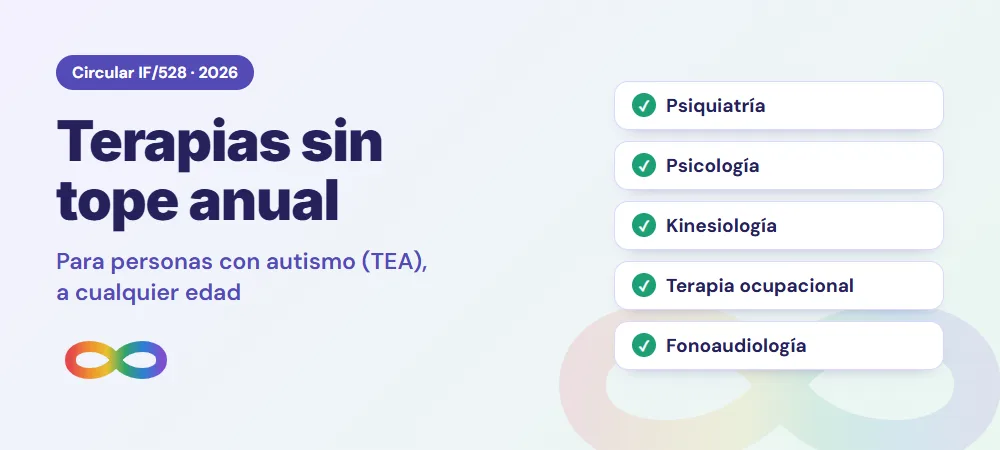

Autismo e Isapres: terapias sin tope anual, a cualquier edad
Lo que cambió en 2026, lo que ya tenían los menores de 6 años, cómo revisar cuánto te cubre tu plan y cómo pedir la cobertura.
Desde mayo de 2026, las Isapres no pueden aplicar el tope anual a la psiquiatría, psicología, kinesiología, terapia ocupacional y fonoaudiología de las personas con autismo (TEA), a cualquier edad (Circular IF/528 de la Superintendencia de Salud). Basta una orden o certificado del médico tratante. Se mantienen el porcentaje de cobertura y el tope por sesión de tu plan.

Muchas familias conocen bien el problema: el plan cubre las terapias hasta un monto máximo al año, y cuando ese monto se acaba, la cobertura baja mucho. Para una persona con autismo, o trastorno del espectro autista (TEA), que necesita terapias de forma permanente, eso cortaba la continuidad del tratamiento. La Superintendencia de Salud instruyó a las Isapres que ese tope anual ya no se puede aplicar a las terapias principales de las personas con diagnóstico de TEA.
Dos reglas que conviene conocer
Circular IF/390, de 2021
Kinesiología, fonoaudiología, terapia ocupacional, psicología y psiquiatría sin tope anual. No necesitan diagnóstico ni acreditar nada: aplica a todos los menores de 6 años, en las prestaciones del arancel de Fonasa que quedaron sin límite, presenciales o por telerehabilitación.
Circular IF/528, de mayo de 2026
Psiquiatría, psicología, kinesiología, terapia ocupacional y fonoaudiología sin tope anual, sin importar la edad ni la antigüedad del contrato. Basta una orden o certificado del médico tratante que acredite el diagnóstico.
En la práctica, un niño con autismo ya no pierde esta cobertura al cumplir 6 años: con su diagnóstico, las terapias siguen sin tope anual en la adolescencia y en la adultez.
Qué cambia y qué no
- Cambia el tope anual. En tu plan aparece como la columna "Tope máx. año contrato por beneficiario". Antes, al llegar a ese monto, la cobertura bajaba mucho. Ahora la Isapre no puede aplicarlo a estas terapias.
- No cambia el porcentaje de cobertura. Si tu plan cubre el 60% de una sesión, sigue cubriendo el 60%.
- No cambia el tope por sesión. Si tu plan tiene un tope por cada atención, ese tope se mantiene. Lo que desaparece es el máximo del año.
- La Isapre no decide el tratamiento. No puede exigir, por ejemplo, que hagas terapia ocupacional para cubrir la fonoaudiología. Las terapias las define el médico tratante según cada caso.
- No te pueden pedir el Registro Nacional de Discapacidad. Basta el diagnóstico médico.
Sin tope anual no significa gratis. Lo que pagas por cada sesión depende del porcentaje y del tope por atención de tu plan, y de si el terapeuta está en convenio con tu Isapre. Con varias sesiones a la semana, la diferencia entre un plan y otro se nota mucho a fin de mes.
Cómo revisar tu plan si tu hijo tiene autismo
Busca en tu plan la tabla de coberturas ambulatorias. Para cada terapia vas a encontrar tres datos:
- El porcentaje de bonificación. Es la parte de cada sesión que paga la Isapre. Puede cambiar según dónde te atiendas: en la red preferente del plan o por libre elección.
- El tope por prestación. Es lo máximo que la Isapre paga por cada sesión, en UF o en "veces arancel". Si la sesión cuesta más que ese tope, la diferencia la pagas tú, aunque el plan diga 70% u 80%.
- El tope anual. Es el máximo del año por beneficiario. Con la Circular IF/528 ya no se aplica a estas cinco terapias, pero las demás atenciones siguen con las condiciones normales de tu plan.
Un ejemplo con números redondos
Dos planes cubren el 70% de una sesión de fonoaudiología que cuesta $30.000. Lo único distinto es el tope por sesión:
| Plan A | Plan B | |
|---|---|---|
| Cobertura | 70% | 70% |
| Tope por sesión | $12.000 | $25.000 |
| Paga la Isapre | $12.000 | $21.000 |
| Pagas tú por sesión | $18.000 | $9.000 |
| Con 8 sesiones al mes | $144.000 | $72.000 |
Son valores de ejemplo, no de un plan real. En tu plan los topes aparecen en UF o en veces arancel.
Los dos planes dicen 70%, pero con dos sesiones a la semana uno te cuesta el doble cada mes. Y si además hay terapia ocupacional o psicología, la diferencia se suma. Cuando las sesiones son constantes, el tope por sesión pesa tanto como el porcentaje.
Red preferente o libre elección
Muchos planes pagan más si te atiendes con los prestadores de su red preferente. Antes de elegir un plan, revisa si el centro o los terapeutas que ya atienden a tu hijo están en esa red. Si no lo están, se aplica la cobertura de libre elección, que en esos planes suele ser menor, y muchas veces tendrás que pagar la sesión completa y pedir el reembolso.
Pide el Informe Planiapp: revisamos tu plan frente al mercado y te decimos cuánto pagarías por sesión. Si tu plan ya es el indicado, te lo decimos. Solo pedimos nombre y WhatsApp, sin datos sensibles.
Cómo pedir la cobertura sin tope
- Pide el certificado. Solicita al médico tratante una orden o certificado que acredite el diagnóstico de autismo (TEA), y las órdenes de las terapias que indica.
- Preséntalo en tu Isapre, en su sucursal virtual o en una sucursal, para que lo considere al bonificar las terapias.
- Revisa tus bonos y reembolsos. Si la cobertura de estas terapias baja después de llegar al antiguo tope anual, la Isapre está aplicando un tope que ya no corresponde.
- Si tu hijo es menor de 6 años, no necesitas certificado para estas terapias. Igual revisa que la Isapre lo esté aplicando.
Si la Isapre no lo aplica
Reclama primero por escrito en tu Isapre, citando la Circular IF/528 si se trata de autismo (TEA), o la Circular IF/390 si es un menor de 6 años. Si no te responde o no te da la razón, puedes ingresar un reclamo en la Superintendencia de Salud.
Si vas a contratar o cambiar de plan
Sin el tope anual, lo que más pesa en un plan para una persona con autismo es:
- El porcentaje de cobertura en psiquiatría, psicología, kinesiología, terapia ocupacional y fonoaudiología.
- El tope por sesión de cada una de esas terapias.
- Dónde se atiende. Si los terapeutas o centros que ya lo atienden están en convenio con la Isapre, o si vas a tener que pagar y pedir reembolso por libre elección.
- Lo que queda fuera de la regla. Las consultas con otras especialidades, como neurología, siguen con las condiciones normales de tu plan.
Y si piensas cambiarte de Isapre, revisa tu caso antes de llenar la declaración de salud. Te lo explicamos en qué pasa con las preexistencias si te quieres cambiar.
Preguntas frecuentes
¿Desde cuándo rige la cobertura sin tope anual para el autismo?
La Circular IF/528 de la Superintendencia de Salud es del 26 de mayo de 2026 y rige desde que se notificó a las Isapres. Aplica a las personas con diagnóstico de trastorno del espectro autista (TEA).
¿Sirve también para adultos con autismo?
Sí. Aplica a cualquier edad y sin importar la antigüedad del contrato.
¿Necesito estar inscrito en el Registro Nacional de Discapacidad?
No. Las Isapres no pueden exigirlo: basta una orden o certificado del médico tratante que acredite el diagnóstico.
¿Ahora mi plan cubre el 100% de las terapias?
No. Solo desaparece el tope anual. Se mantienen el porcentaje de cobertura y el tope por sesión de tu plan.
¿Cuánto voy a pagar por cada sesión?
Depende de tu plan: del porcentaje de cobertura, del tope por sesión de cada terapia y de si el terapeuta está en la red preferente. Sin tope anual, esa cuenta se repite en cada sesión del año.
¿Mi hijo menor de 6 años necesita un diagnóstico?
No. Para los menores de 6 años, la kinesiología, la fonoaudiología, la terapia ocupacional, la psicología y la psiquiatría no tienen tope anual en las prestaciones que el arancel de Fonasa dejó sin límite, y no hay que acreditar ningún diagnóstico.
¿Tu hijo tiene autismo y no sabes cuánto te cubre tu plan?
Con el Informe Planiapp revisamos tu plan frente al mercado, te decimos cuánto pagarías por sesión en cada terapia y si hay una opción que te convenga más. Si tu plan ya es el indicado, te lo decimos y no te cambias. Gratis y sin compromiso.
Pedir mi Informe Planiapp →Artículos que te podrían interesar
La información de este artículo es general y puede cambiar según la normativa vigente. Se basa en la Circular IF/N°528 de 2026 y la Circular IF/N°390 de 2021 de la Superintendencia de Salud, y en la Ley N°21.545. Para evaluar tu caso particular, te recomendamos una asesoría.